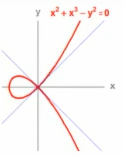
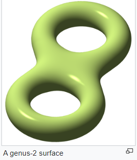

Mathematical Information
Overview
Algebraic Geometry is the study of geometric shapes defined by polynomial equations. In particular, a complex algebraic variety can be understood as the common zero set of a collection of complex polynomials in n variables. This means that the solutions to these polynomials, known as zeros, reside in \(\mathbb{C}^n\). On webpages and in many visual representations, we typically draw only the real points of these algebraic varieties. Nevertheless, it's important to note that the solutions and properties of complex algebraic varieties extend beyond what can be visually represented in real space. To further explore algebraic varieties, we introduce the concept of projective space. Projective space over a field \(k\), denoted as \(\mathbb{P}^n(k)\), can be defined as the set of one-dimensional subspaces of an \(n+1\)-dimensional space over \(k\), denoted as \(k^{(n+1)}\). Each line in the \(n+1\)-dimensional vector space corresponds to a point in the projective space. To assign coordinates to points in projective space, we consider the \(n+1\) coordinates \((x_0, x_1, \ldots, x_n)\) in the \(n+1\)-dimensional affine space. However, we exclude the points corresponding to the zero vector by requiring that not all \(x_i\) are equal to \(0\). We also allow for scaling, meaning that multiplying the coordinates by a nonzero scalar does not change the corresponding point. So, we include the condition that \((x_0, x_1, \ldots, x_n) \sim (\lambda x_0, \lambda x_1, \ldots, \lambda x_n)\) for any nonzero scalar \(\lambda\). Projective space can be thought of as taking the affine space and adding some points at infinity to complete the projective space of lower dimension.
Singular Points
In algebraic geometry, a singular point of an algebraic variety refers to a point where the variety fails to be smooth or regular. It is a point where the tangent space has a dimension greater than the dimension of the variety. In the case of plane curves, where the variety is a curve in the plane, a point is singular if and only if the gradient vectors of the defining equation vanish at that point. If the gradient vector does not vanish, the tangent space has dimension 1, which is the same as the dimension of the curve. If the gradient vector vanishes, the tangent space has dimension 2, which is greater than the dimension of the curve. In this case, the tangent space is the whole affine plane,which is the wrong dimension. Consider a simple cusp defined by the equation \( f(x, y) = y^2 - x^3 = 0\). The vanishing set of \(f\) (or vanishing locus or zero set) is the set \( V(f)\) of all points in \(\mathbb{C}^n\) where every polynomial in \(f\) vanishes. Symbolically, \(V(f) = \left\{ (x, y) \mid f(x, y) = y^2 - x^3 = 0 \right\}\). The partial derivatives help us determine the points where the gradient vector in the defining equation vanishes, which correspond to points where the tangent space has dimension greater than the curve's dimension. To find the singular points, we consider the partial derivatives of the defining equation \(f\) with respect to each variable. For the curve \(f(x,y) = y^2 - x^3 = 0\), we have: \(\frac{\partial f}{\partial x} = -3x^2\) and \(\frac{\partial f}{\partial y} = 2y\). The singular points occur where both partial derivatives are simultaneously zero. In this case, setting both partial derivatives to zero, we get \(-3x^2 = 0\) and \(2y = 0\). From the second equation, we have \(y = 0\), and substituting this into the first equation, we find \(x = 0\). Therefore, the only singular point of the curve is at the origin, \((0:0:1)\), where both partial derivatives vanish.
On our webpage, these points are represented by homogeneous coordinates consisting of three variables. We want to utilize projective geometry to solve for points at infinity. First, we homogenize the equation by introducing an additional variable, \(z\), which transforms our point in the Cartesian plane into a line passing through the origin in a three-dimensional space. Subsequently, we de-homogenize the equation by setting \(z\) to 1. This results in a reference plane where \(z=1\), which is parallel to the Cartesian plane. Any non-horizontal line will intersect the reference plane at a unique point. In the Cartesian plane, the horizontal line corresponds to points at infinity.

Degree
The degree of a hypersurface in the projective space is defined as the degree of the homogeneous defining polynomial.
Multiplicity
How can we quantify the singularity at a point? We focus attention on one point and translate it into our origin by changing our coordinates in the space we are looking at. This naïve measure of singularities gives us the formal definition of multiplicities: The order (or multiplicity) of singularities [at the origin \(0\)] is the degree of the lowest term in \(f\). Let's think about what this invariant means for plane curves. If we think about what's happening near the origin for a curve defined by the zero set of \(y^2-x^2+x^3\), the lower degree terms \(y^2-x^2\) as we plug in very small values are going to dominate what's happening of the story of the function. This is because the higher degree terms will be going to zero even faster. So, near the origin the curve will look like the zero set of the lowest degree part of its defining polynomial. Thus, the multiplicity of singularities at the origin is \(2\).
Branching Number
In the context of algebraic curves, branch points correspond to singularities where the curve intersects or crosses itself. The branching number associated with each branch point indicates the number of branches originating from that point. For example, the branching number of the singular point of this curve at the origin is \(8\).

Genus
The genus-degree formula in classical algebraic geometry relates the degree \(d\) of a plane curve \(C\) in the projective plane \(ℙ²\) to its arithmetic genus \(g\). The formula states that the genus \(g\) is given by \(g = \frac{1}{2}(d-1)(d-2)\). The arithmetic genus measures the number of "holes" or handles in the curve when viewed as a topological surface. In the case of a non-singular curve, where \(C\) has no singular points, the geometric genus coincides with the arithmetic genus. However, for singular curves with only ordinary singularities, the geometric genus is smaller than the arithmetic genus. An ordinary singularity of multiplicity \(r\) at a point \((x_0:y_0:z_0)\) occurs when the defining equation of the curve locally resembles \(x^r - y^r = 0\). At this singularity, the tangent space has dimension \(2\) and the partial derivatives of the defining equation are simultaneously zero. Specifically, the tangent space at \(p=(p_1,p_2)\) is defined by the vanishing of the linear part \(d_p(f) = \frac{\partial f}{\partial x} (p) (x-p_1) + \frac{\partial f}{\partial y} (p) (y-p_2) \) of \(f\) at \(p\). The presence of ordinary singularities impacts the overall genus of the curve. Each ordinary singularity of multiplicity \(r\) decreases the genus by \(\frac{1}{2}r(r-1)\). Thus, to compute the genus \(g\) of a curve with ordinary singularities, we start with the arithmetic genus \(p_a\), given by the formula \(p_a = \binom{d-1}{2}\), where \(d\) is the degree of the curve. Then, we subtract \(\frac{1}{2}r(r-1)\) for each ordinary singularity of multiplicity \(r\).
Delta Invariant
The delta invariant is a numerical value that helps classify singularities and provides information about their local behavior. It measures the number of ordinary double points concentrated at a point. Intuitively, a singular point has a delta invariant \( \delta \) if it concentrates \( \delta \) ordinary double points at \( P \). At each singular point \( x \in \mathbb{C} \), denoted as \( \delta_x \), the delta invariant is calculated as \( \frac{1}{2} m_x (m_x - 1) \), where \( m_x \) represents the multiplicity of \( x \) as a singular point. The multiplicity can be determined by examining the Taylor series or polynomial expansion of the defining equation of the curve. The highest total degree partial derivative that does not vanish at the singular point \( x \) provides the multiplicity. The delta invariant of the curve \( C \), denoted as \( \delta \), is obtained by summing up the delta invariants over all singular points (including infinitely near singular points): \( \delta = \sum_x \delta_x \). The geometric genus \( g \) of a curve with singularities can then be determined using the formula \( g = p_a - \delta \), where \( p_a \) is the arithmetic genus of the curve.
Milnor Number
The Milnor number is a topological invariant of a singularity. Consider a function germ denoted by \( f : (\mathbb{C}^n, 0) \to (\mathbb{C}, 0) \), where \( (\mathbb{C}^n, 0) \) represents the complex n-dimensional space and \( (\mathbb{C}, 0) \) represents the complex plane. The ring of all function germs from \( (\mathbb{C}^n, 0) \) to \( (\mathbb{C}, 0) \) is denoted by \(\mathcal{O}_n\). Let's assume that the hypersurface singularity \( f \) is singular at \( 0 \in \mathbb{C}^n \). In the case of holomorphic mappings, we say that a hypersurface singularity \( f \) is singular at \( 0 \) if its gradient \( \nabla f \) is zero at \( 0 \). A singular point is isolated if it is the only singular point in a sufficiently small neighborhood.
Tjurina Number
Let \( f: (\mathbb{C}^n, 0) \rightarrow (\mathbb{C}, 0) \) be a germ of an isolated hypersurface singularity. We denote by \( T_f = \frac{\mathbb{C}\{x_1, \ldots, x_n\}}{(f, \frac{\partial f}{\partial x_1}, \ldots, \frac{\partial f}{\partial x_n})} \) the tangent space and by \( M_f = \frac{\mathbb{C}\{x_1, \ldots, x_n\}}{(\frac{\partial f}{\partial x_1}, \ldots, \frac{\partial f}{\partial x_n})} \) the module of the singularity. Both \( T_f \) and \( M_f \) are complex finite-dimensional vector spaces. The Tjurina number, denoted by \( \tau \), is defined as the dimension of the tangent space, i.e., \( \tau = \dim_{\mathbb{C}} T_f \). It serves as an analytic invariant of the singularity and provides important information about its local behavior.
Milnor-Jung Formula
The Milnor-Jung formula is a mathematical formula that relates the Milnor number (\( \mu \)) of a plane curve singularity to its branching number (\( r \)) and multiplicity (\( m \)). The formula at a singular point \(p\) is given by: \[ \mu_p = 2\delta_p - r_p + 1. \] Here, the branching number (\( r_p \)) of a singularity is the number of locally irreducible branches at the singular point, and the multiplicity (\( m_p \)) is the maximum number of branches passing through the singular point. The parameter \( \delta_p \) is the delta-invariant, which is related to the topological type of the singularity.
References
- David Cox, John Little and Donald O'Shea, "Ideals, Varieties and Algorithms", Springer.
- Karen E. Smith, University of Michigan, gives the first AMS Colloquium Lecture on "Understanding and Measuring Singularities in Algebraic Geometry," on April 6, 2022 at the Virtual 2022 Joint Mathematics Meetings.
- Karen E. Smith, University of Michigan, gives the second of the three AMS Colloquium Lectures at the Virtual 2022 Joint Mathematics Meetings on "Measuring Singularities," April 7, 2022.
- https://en.wikipedia.org/wiki/Algebraic_curve#Classification_of_singularities
- https://en.wikipedia.org/wiki/Branch_point
- https://en.wikipedia.org/wiki/Genus_(mathematics)
- https://en.wikipedia.org/wiki/Milnor_number
- https://www.ub.edu/grega/JORGE/Slides/Almiron.pdf
- https://en.wikipedia.org/wiki/Genus%E2%80%93degree_formula
- https://www.youtube.com/watch?v=iNfFNwIK_co&list=PL8yHsr3EFj53j51FG6wCbQKjBgpjKa5PX&index=15
- https://www.youtube.com/watch?v=jO2Rl6ecMUM